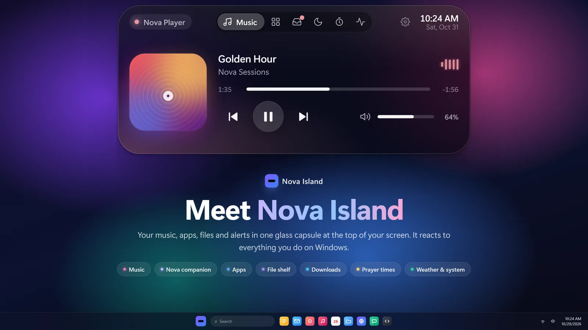
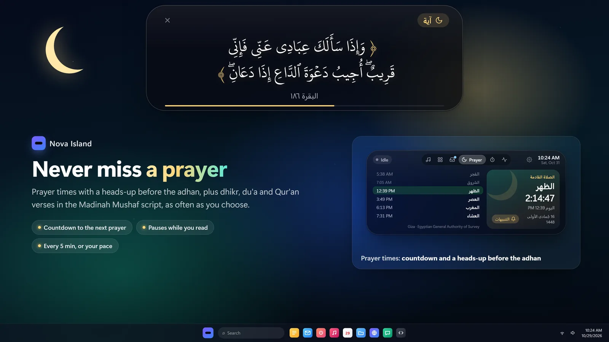
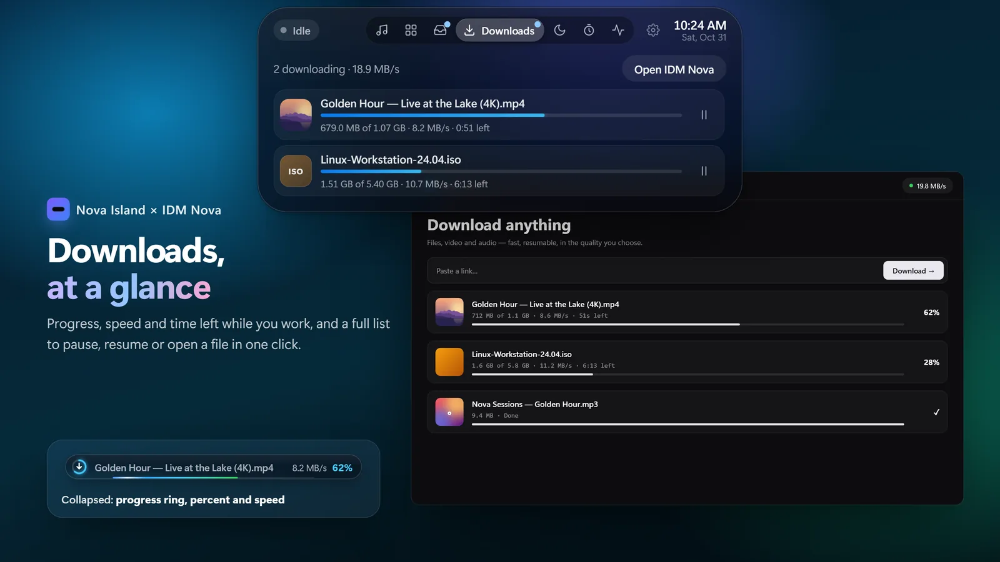
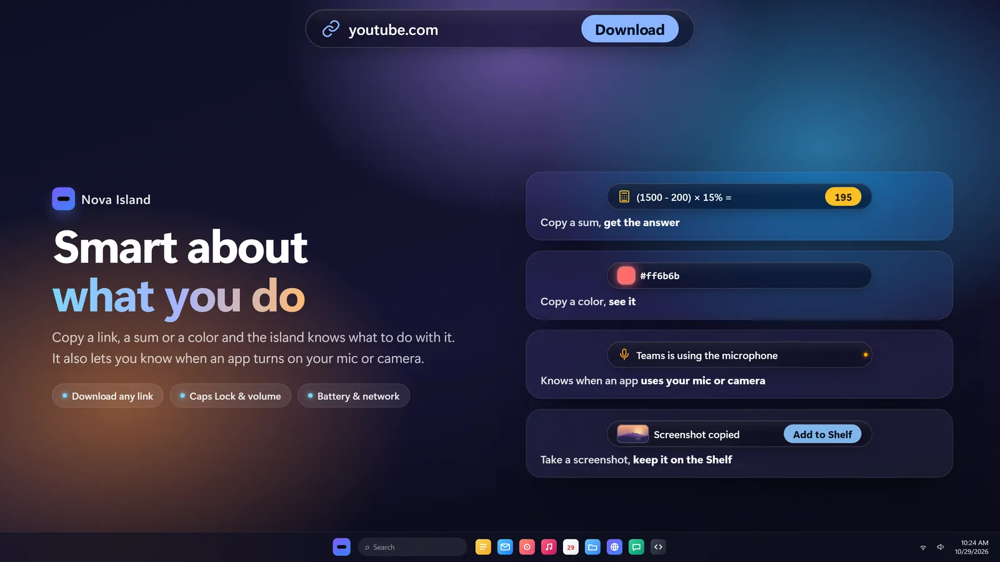
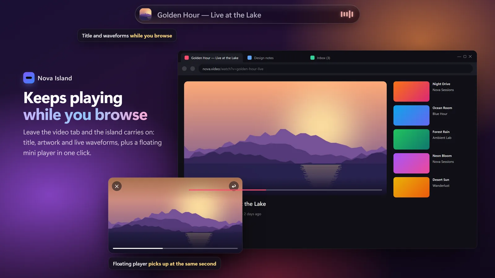

Music, messages, prayer times, downloads and your apps, in one living glass island at the top of your screen. With Nova, a little companion who keeps you company.
It rests as a slim pill and opens when you need it. No windows to juggle, nothing to keep open.
Your music, always in reach
Spotify, YouTube in any browser, VLC and more. See what's playing, skip, seek and set the volume without leaving what you're doing.
Cover art and live equalizer
Pop a YouTube video into a floating mini player
Volume and brightness right on the island

New in 1.8
Your messages, on the island
WhatsApp, Telegram and your other apps show up right at the top, each with its own icon and color. Long messages scroll so you can read them whole. Click one to open the app.
Off until you turn it on
Nothing leaves your PC
Turn off Windows' banners to see each one once
Sara Are we still on for tonight?Open
Prayer times and Qur'an radio
A countdown to the next prayer, a gentle heads-up before the adhan, and verses and adhkar through the day. Live Qur'an radio from Cairo, Saudi and 140+ reciters, or any surah from its first ayah.
20 calculation methods, Hijri date
Reciters, live or surah by surah
Pauses itself at prayer time if you like

Downloads you can watch
Browser downloads and IDM Nova in one place: a progress ring, the speed and time left, even when the island is collapsed.
Pause, resume and open from the island
A notice when each one is done

It understands what you copy
Copy a link, a sum or a color and the island offers the right next step. Your screenshots wait on the Shelf, ready to drag into any app.
Smart clipboard and history
A Shelf for files, in and out by dragging
A dot when an app uses your mic or camera

Lives with your browser
Over a browser it takes the right third of the address bar, so it never covers your tabs. Prefer it to stay put? It lets clicks pass through to the tab under it.
Up to 36 pinned apps, in pages
Open apps come first
Dock it on top, or vertical on either side

Meet Nova
A little companion who looks your way when your cursor comes close, cheers you through focus sessions, reminds you to drink water and welcomes you back with what you missed.
Move your cursor around. Nova is watching.
13 themes
Make it yours.
Liquid glass, pure black, pine, sakura, pixel green and more. Some even give Nova little ears.
9:41Tue, Nov 424°
Version 1.8.0
Same island. Half the weight.
Measured side by side on the same PC, with the island resting on screen.
0×
less CPU
Before0.97%
1.80.47%
0%
less memory
Before193 MB
1.8150 MB
<0 MB
download
Before107 MB
1.80.86 MB
0 MB
on your disk
Before325 MB
1.82 MB
Private by design
No account, no ads, no tracking. Your settings and messages stay on your PC, and the code is open for anyone to read.
Support Nova
Buy Nova a coffee☕
Nova Island is free, with no ads and no tracking. If it makes your day a little better, a coffee keeps new features coming.
Moving from the GitHub version to the Store? Uninstall the old one first, so you don't end up with two islands: Settings → Apps → Installed apps → Nova Island → Uninstall. Your settings stay on your PC.
Windows says "Windows protected your PC"?
That shows for the direct download because the installer isn't code-signed yet. Choose More info → Run anyway. The Microsoft Store version doesn't show it.